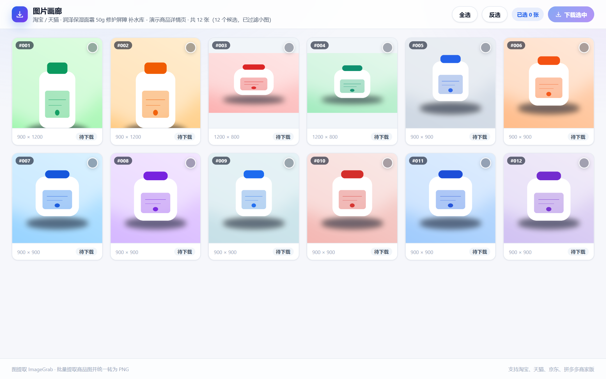

图片分散，逐个保存太慢
主图、详情长图、SKU 图、活动海报位置各不相同，一页二十几张图要右键二十几次。
产品介绍
电商详情页的图片通常分散在主图、SKU、详情长图、促销海报里，还混着图标和占位图。 人工右键另存既慢，又容易漏图、存到 webp 格式。图提取把这件事压缩成一次点击。
主图、详情长图、SKU 图、活动海报位置各不相同，一页二十几张图要右键二十几次。
很多图写在 data-src、srcset 或 CSS background-image 里，浏览器右键根本存不到。
下载下来有 webp、jpg、avif，交给设计或上传后台还得再转一遍格式、改一遍文件名。
核心功能
每个环节都为「整页图片批量处理」设计，扫描、过滤、勾选、转换、命名都不用你操心。
扫描 img、srcset、data-src、背景图等全部来源，懒加载图片也能补全地址。
自动排除图标、logo、占位图、1×1 像素图和小于 100×100 的装饰图。
新标签页网格展示所有图片，带尺寸信息和序号，先看清楚再决定存哪张。
支持全选、反选与实时已选数量，只下载真正需要的那几张。
jpg、webp、avif 全部经 canvas 重绘导出为 PNG，不存在格式兼容问题。
文件名自动编号为 商品图_001.png，下载过程有进度，结束后给出成功与失败统计。
界面预览
左侧详情页右下角一个按钮，点完直接跳到右侧画廊：勾选、看尺寸、批量下载。

安装步骤
插件没有后端、不收集任何数据，安装就是把文件夹加载进浏览器。
下载插件压缩包，解压到一个固定文件夹（之后不要删除，否则插件会失效）。
地址栏输入 chrome://extensions 并回车。
打开右上角的「开发者模式」开关。
点击「加载已解压的扩展程序」，选择解压后的文件夹，完成。
商品图_001.png 递增编号保存到浏览器默认下载目录。